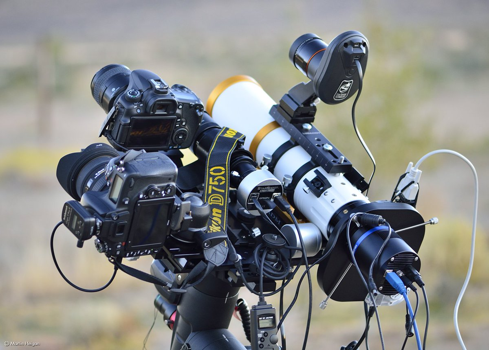
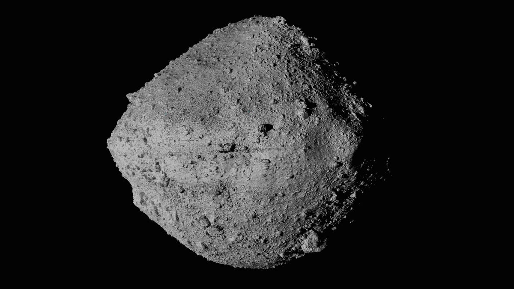
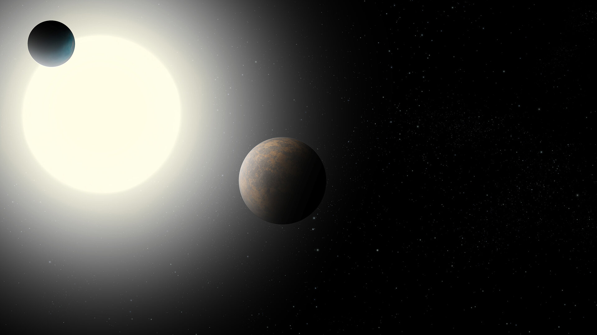

Ce site rassemble divers travaux effectués lors de mes observations. Astrophotographie, études d'astéroïdes, transits d'exoplanètes, ...
Qu'est-ce que l'astrophotographie ? 
Qu'est-ce qu'un astéroïde ? 
Qu'est-ce qu'une exoplanète ? 